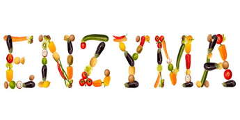

Ένζυμα: Οι ισχυροί καταλύτες της ζωής
Τι είναι τα ένζυμα, πώς λειτουργούν και γιατί η ζωή δεν θα μπορούσε να υπάρξει χωρίς αυτά.
→Knowledge · Research · Study
Επιστημονικά θέματα με καθαρή γλώσσα, αξιόπιστες πηγές και αγάπη για τη βιολογία.

ΒιοχημείαΤι είναι τα ένζυμα, πώς λειτουργούν και γιατί η ζωή δεν θα μπορούσε να υπάρξει χωρίς αυτά.
→